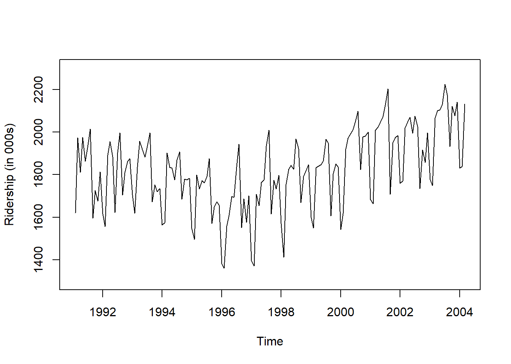
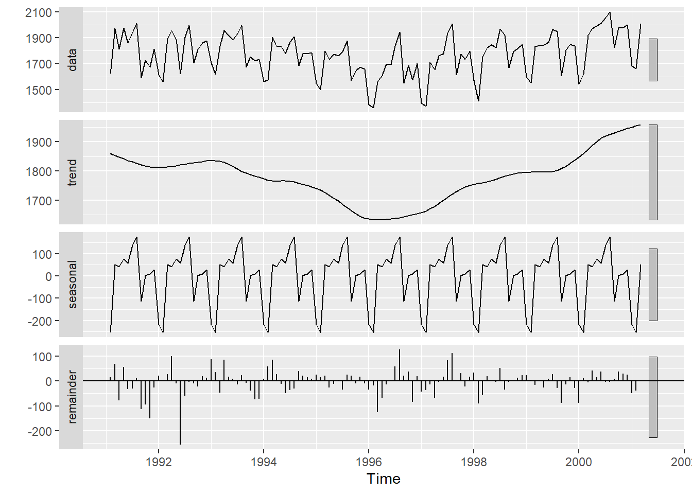
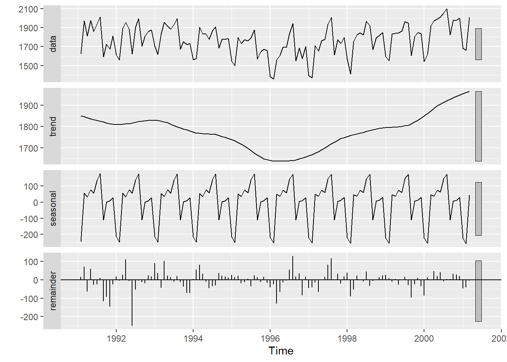
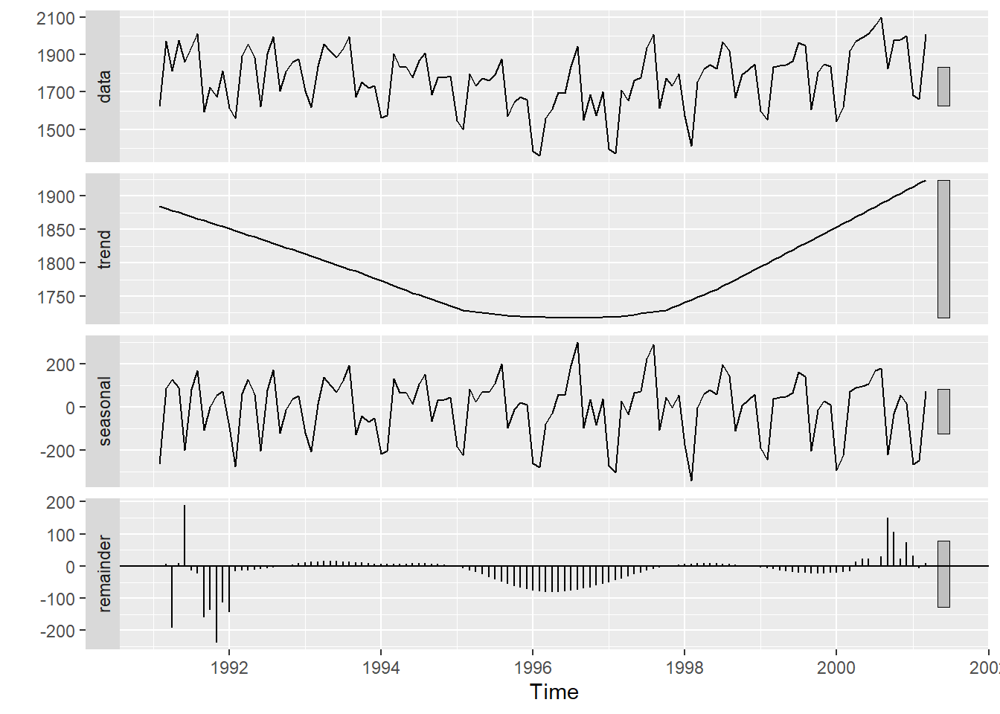
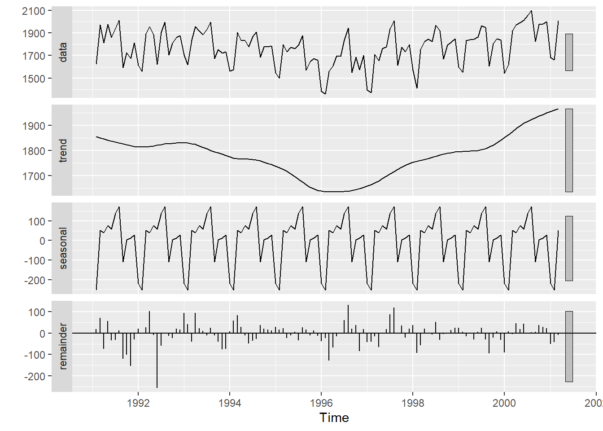
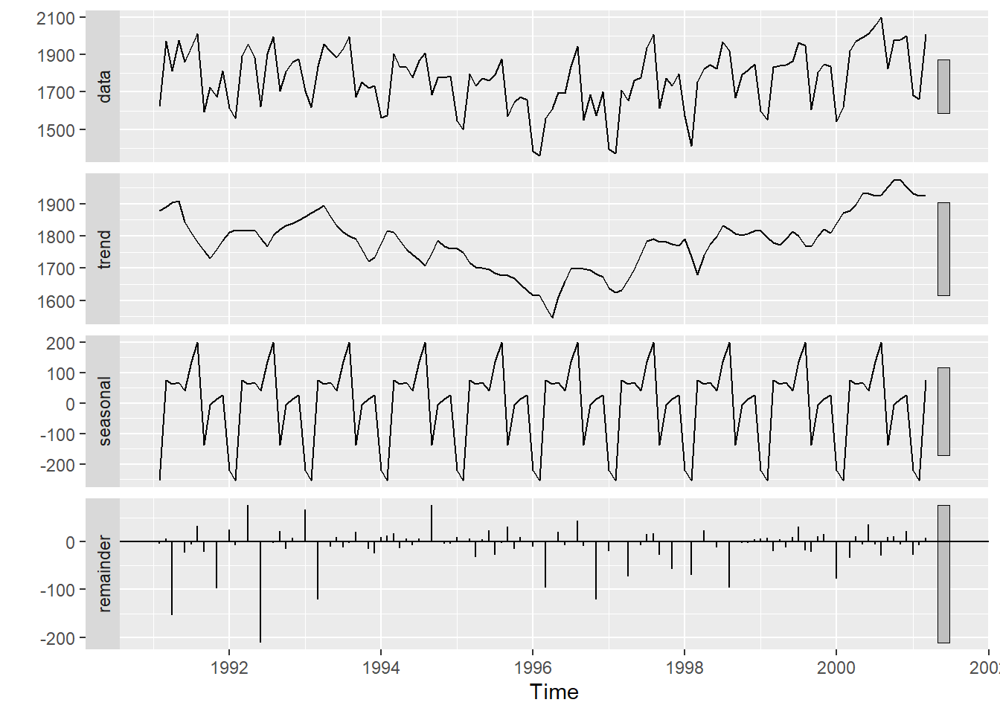
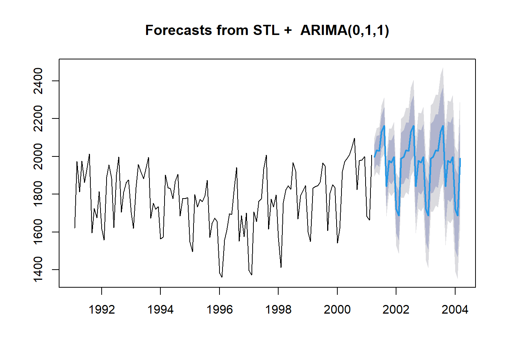
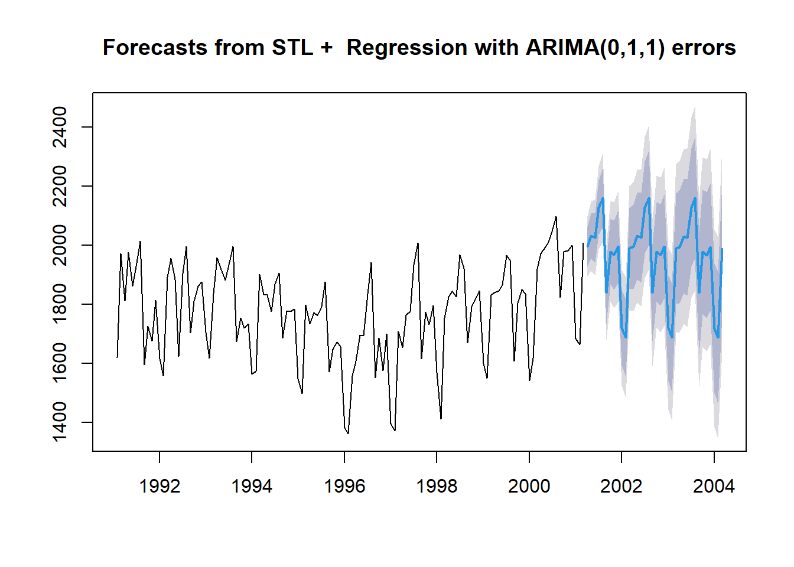

pacman::p_load("forecast",
"dplyr")
Amtrak.data <- read.csv(".../Amtrak.csv") # 데이터 불러오기
Amtrak.data %>%
as_tibble9 STLM
9.1 Amtrak
예제 데이터로 사용하는 "Amtrak.csv"은 1991년 1월부터 2004년 3월까지 미국 철도 회사인 암트랙에서 제공한 월간 승객 수(단위 : 1,000명)가 기록되어져 있다.
9.1.1 데이터 불러오기
# A tibble: 159 × 2
Month Ridership
<chr> <dbl>
1 01/01/1991 1709.
2 01/02/1991 1621.
3 01/03/1991 1973.
4 01/04/1991 1812.
5 01/05/1991 1975.
6 01/06/1991 1862.
7 01/07/1991 1940.
8 01/08/1991 2013.
9 01/09/1991 1596.
10 01/10/1991 1725.
# ℹ 149 more rows9.1.2 데이터 전처리
# 1. Create Predictor Variable
ridership.df <- Amtrak.data %>%
dplyr::mutate(Lag1 = dplyr::lag(Ridership,
n = 1)) %>% # 바로 이전 과거에 관측된 값을 예측 변수로 생성
na.omit() # 결측치 NA가 포함된 행 제거 -> 첫 번째 시계열은 과거 관측값이 없기 때문에 변수 Lag1에 NA 생성
ridership.df %>%
as_tibble# A tibble: 158 × 3
Month Ridership Lag1
<chr> <dbl> <dbl>
1 01/02/1991 1621. 1709.
2 01/03/1991 1973. 1621.
3 01/04/1991 1812. 1973.
4 01/05/1991 1975. 1812.
5 01/06/1991 1862. 1975.
6 01/07/1991 1940. 1862.
7 01/08/1991 2013. 1940.
8 01/09/1991 1596. 2013.
9 01/10/1991 1725. 1596.
10 01/11/1991 1676. 1725.
# ℹ 148 more rows# 2. Convert to ts for Target
ridership.ts <- ts(ridership.df$Ridership,
start = c(1991, 2), # 시계열의 시작 연도 / c(1991, 2) : 1991년 2월 -> 첫 번째 시계열은 제거했기 때문
frequency = 12) # 주기 / 월별 시계열로 1년에 12번 관측
# 시계열 그림
plot(ridership.ts,
xlab = "Time", ylab = "Ridership (in 000s)",
ylim = c(1300, 2300))
Caution! CSV 파일로 불러온 데이터를 살펴보면 승객 수를 포함하는 변수 Ridership가 수치형임을 알 수 있다. 시계열 데이터 분석을 위해 함수 ts()를 이용하여 해당 변수를 시계열 객체로 변환해야 한다.
Result! 시계열 그림을 살펴보면 Amtrak 데이터는 U자 형태의 추세를 발견할 수 있으며, 여름(7월과 8월) 동안에 승객이 급증하는 뚜렷한 계절변동도 볼 수 있다.
9.1.3 데이터 분할
Caution! 시계열 데이터 분석 시 모형의 과적합을 피하고 미래 데이터에 대한 예측력을 계산하기 위해 Training Dataset과 Test Dataset으로 분할해야 한다. 시계열 데이터의 경우, 시간에 의존하기 때문에 시간 순서를 고려하여 데이터를 분할해야 한다. 즉, 앞 시점의 데이터를 Training Dataset로 사용하여 모형을 구축하고, 뒷 시점의 데이터를 Test Dataset로 사용하여 구축된 모형의 성능을 평가한다. 여기서는 데이터 분할을 위해 함수 window()를 사용한다.
# Partition for Target
train.ts <- window(ridership.ts,
start = c(1991, 2), # 분할하고자 하는 시계열의 시작 연도 / c(1991, 2) : 1991년 2월 -> 첫 번째 시계열은 제거했기 때문
end = c(2001, 3)) # 분할하고자 하는 시계열의 마지막 연도 / c(2001, 3) : 2001년 3월
test.ts <- window(ridership.ts,
start = c(2001, 4)) # 분할하고자 하는 시계열의 시작 연도 / c(2001, 4) : 2001년 4월
nTrain <- length(train.ts) # Training Dataset의 데이터 포인트 개수
nTest <- length(test.ts) # Test Dataset의 데이터 포인트 개수
train.ts %>%
as_tibble# A tibble: 122 × 1
x
<dbl>
1 1621.
2 1973.
3 1812.
4 1975.
5 1862.
6 1940.
7 2013.
8 1596.
9 1725.
10 1676.
# ℹ 112 more rowstest.ts %>%
as_tibble# A tibble: 36 × 1
x
<dbl>
1 2024.
2 2047.
3 2073.
4 2127.
5 2203.
6 1708.
7 1951.
8 1974.
9 1985.
10 1760.
# ℹ 26 more rowsnTrain[1] 122nTest[1] 369.2 Decomposition
- 시계열은 추세(Trend), 계절(Seasonal), 나머지(Remainder) 성분으로 분해할 수 있다. \[
\begin{align*}
Y_t = T_t + S_t +R_t
\end{align*}
\]
- \(T_t\) : 추세 성분
- \(S_t\) : 계절 성분
- \(R_t\) : 나머지(오차) 성분
- 비정상성인 추세와 계절성을 제거했으므로 정상 시계열 형태
- 분해는 시계열을 이해하는 데 도움이 되며, 시간에 따른 변화를 살펴볼 때 유용하다.
- 특히,
Seasonal and Trend decomposition using Loess (STL)분해는 다양한 상황에서 사용할 수 있는 강력한 시계열 분해 기법이다.- STL이 가지는 장점은 다음과 같다.
- 어떤 종류의 계절성도 다룰 수 있다.
- 계절성이 시간에 따라 변화해도 잘 분해할 수 있다.
- 추세의 매끄러운 정도를 사용자가 조절할 수 있다.
- 이상치가 추세와 계절 성분에 영향을 주지 않게 만들 수 있다.
- STL이 가지는 장점은 다음과 같다.
Caution! 시계열에 STL 분해를 적용하기 위해서는 함수 stl()를 이용하면 되고, 자세한 옵션은 여기를 참고한다. 만약, 시계열이 다중 계절성(계절 주기가 2개 이상인 경우)을 가진다면, 함수 mstl()을 이용한다.
stl(x, s.window, t.window, ...)x: 시계열s.window: 계절 성분의 값을 추정할 때 사용할 연이은 시계열 관측값의 개수- 해당 옵션을 통해 시간의 흐름에 따라 계절 성분이 얼마나 급격하게 변하는 지 조절할 수 있다.
- 계절 패턴이 시간의 흐름에 따라 일정하면
"periodic"을 입력한다."periodic"을 입력하면 같은 계절의 추정된 성분값은 동일하다.- 예를 들어, 주기가 12인 월별 시계열 데이터에 대해 2012년 1월과 2013년 1월의 추정된 계절 성분값이 동일하다.
- 계절 패턴이 느리게 변하는 경우, 즉, 계절 패턴이 긴 주기로 변하는 경우
큰 값을 입력한다.- 예를 들어, 주식 데이터의 경우, 일반적으로 연간으로 반복되는 계절 패턴이 있을 수 있다.
- 즉, 일일 시계열 데이터가 연 단위 계절성을 가진다면
s.window값을 크게 설정하여 보다 긴 시간 동안의 데이터를 고려하여야 한다.
- 계절 패턴이 빠르게 변하는 경우, 즉, 계절 패턴이 짧은 주기로 변하는 경우
작은 값을 입력한다.- 예를 들어, 일별 기온 데이터의 경우, 계절 주기는 연 단위보다는 한 주 또는 한 달 단위로 더 빠르게 변화할 수 있다.
- 이러한 데이터에 대해
s.window값을 작게 설정하여 최근의 변화와 세부적인 계절 패턴을 더 잘 반영할 수 있게 한다.
t.window: 추세를 추정할 때 사용할 연이은 시계열 관측값의 개수- 값이 커질수록 추세를 평활하게(스무스하게) 추정한다.
# 옵션 s.window에 "periodic" 입력
train.ts %>%
stl( s.window = "periodic", robust = TRUE) %>%
autoplot()
# 옵션 s.window에 큰 값 입력
train.ts %>%
stl( s.window = 20, robust = TRUE) %>%
autoplot()
# 옵션 s.window에 작은 값 입력
train.ts %>%
stl( s.window = 2, robust = TRUE) %>%
autoplot()
Result! s.window에 "periodic" 또는 20과 같이 큰 값을 입력하면 추정된 계절 성분의 값은 시간의 흐름에 따라 일정한 패턴을 가진다. 반면, 2와 같이 작은 값을 입력하면 최근의 변화와 세부적인 계절 패턴을 포착함으로써 시간의 흐름에 따라 추정치의 변동이 일정하지 않다.
# 옵션 t.window에 큰 값 입력
train.ts %>%
stl( s.window = "periodic", t.window = 20, robust = TRUE) %>%
autoplot()
# 옵션 t.window에 작은 값 입력
train.ts %>%
stl( s.window = "periodic", t.window = 5, robust = TRUE) %>%
autoplot()
Result! t.window에 20과 같이 큰 값을 입력하면 추정된 추세 성분은 스무스하게 변화한다. 반면, 5와 같이 작은 값을 입력하면 추세 성분이 더 민감하게 데이터의 최근 변동을 반영하게 만들어 빠르게 변화하는 추세를 더 잘 잡아낼 수 있다.
Caution! t.window에 너무 작은 값을 입력하면 빠른 추세 변동을 감지할 수 있지만, 잡음에 민감해질 수 있다.
9.3 STLM
- 분해는 시계열을 연구하거나 시간에 따른 변화를 살펴볼 때 유용하지만, 예측에도 사용할 수 있다.
- STL Model (STLM)은 STL 분해를 이용하여 시계열을 \(Y_{t} = S_{t} + T_{t}+R_t\)로 분해한 후 \(S_{t}\)와 \(A_{t}=T_{t}+R_t\)를 각각 예측하고, 두 예측값을 더한 것을 최종 예측값으로 사용한다.
- \(S_{t}\) : 계절 성분(Seasonal Component)
- \(S_{t}\)는 계절 성분이 변하지 않거나 엄청 느리고 변하는 상황을 가정하고
Seasonal Naive Method을 이용하여 예측한다.
- \(S_{t}\)는 계절 성분이 변하지 않거나 엄청 느리고 변하는 상황을 가정하고
- \(A_{t}\) : 추세 + 나머지 성분
- \(A_{t}\)는
시계열 모형을 이용하여 예측한다.
- \(A_{t}\)는
- \(S_{t}\) : 계절 성분(Seasonal Component)
9.3.1 Seasonal Naive Method
- Seasonal Naive Method은 계절성이 아주 뚜렷한 데이터를 다룰 때 유용한 방법이다.
- 해당 방법은 각 예측값을
같은 계절의 마지막 관측값으로 계산한다.- \(\hat{y}_{T+h|T}=y_{T+h-m(k+1)}\)
- \(m\) : 계절성의 주기 (Seasonal Period)
- \(k\) : \((h-1)/m+1\)의 정수 부분
- \(\hat{y}_{T+h|T}=y_{T+h-m(k+1)}\)
- 아래 그림은 \(m=5\)일 때 예측값을 나타낸 예제이다.
9.3.2 STLM without 예측 변수
- STLM은 package
"forecast"에서 제공하는 함수stlm()을 이용하여 수행할 수 있으며, 자세한 옵션은 여기를 참고한다.
stlm(y, s.window, method = c("ets", "arima"), modelfunction, xreg )y: 시계열s.window: STL 분해를 위한 옵션으로 계절 성분의 값을 추정할 때 사용할 연이은 시계열 관측값의 개수method: \(A_{t}\) (추세 + 나머지 성분)을 분석하기 위해 적용할 시계열 모형modelfunction:"ets","arima"외에 적용하고자 하는 시계열 모형에 대한 함수 형태xreg:method = "arima"일 때, 함수auto.arima()에 사용할 예측 변수
STLM.fit <- train.ts %>%
stlm(method = "arima") # 시계열을 분해하고 추세 + 나머지 성분에 ARIMA 모형 구축
STLM.fit$stl
Data Trend Seasonal12 Remainder
Feb 1991 1620.586 1845.589 -235.4352725 10.432658
Mar 1991 1972.715 1838.570 64.8009914 69.343831
Apr 1991 1811.665 1831.552 59.1927972 -79.079538
May 1991 1974.964 1824.533 91.0722464 59.358450
Jun 1991 1862.356 1818.607 11.6781199 32.071141
Jul 1991 1939.860 1812.680 131.1191784 -3.939353
Aug 1991 2013.264 1806.754 204.0037365 2.506654
Sep 1991 1595.657 1801.109 -118.9547648 -86.497490
Oct 1991 1724.924 1795.465 -10.3433089 -60.197591
Nov 1991 1675.667 1789.821 -23.0066636 -91.146881
Dec 1991 1813.863 1786.195 23.1490419 4.519249
Jan 1992 1614.827 1782.569 -194.4197120 26.677839
Feb 1992 1557.088 1778.943 -237.7347625 15.879725
Mar 1992 1891.223 1783.421 61.7766339 46.025684
Apr 1992 1955.981 1787.898 56.5182411 111.564433
May 1992 1884.714 1792.376 89.2338971 3.104132
Jun 1992 1623.042 1798.630 14.5256102 -190.113635
Jul 1992 1903.309 1804.884 133.6004547 -35.175533
Aug 1992 1996.712 1811.138 205.6757720 -20.101903
Sep 1992 1703.897 1815.438 -117.4282438 5.887341
Oct 1992 1810.000 1819.738 -8.2081763 -1.529498
Nov 1992 1861.601 1824.037 -21.8468800 59.410435
Dec 1992 1875.122 1828.225 23.8311784 23.066091
Jan 1993 1705.259 1832.412 -196.6676125 69.514597
Feb 1993 1618.535 1836.599 -240.0770395 22.012739
Mar 1993 1836.709 1832.651 58.7522001 -54.693759
Apr 1993 1957.043 1828.702 53.8863195 74.454864
May 1993 1917.185 1824.753 87.4877484 4.944177
Jun 1993 1882.398 1817.249 17.5148673 47.633859
Jul 1993 1933.009 1809.745 136.2601800 -12.996653
Aug 1993 1996.167 1802.242 207.5629383 -13.637610
Sep 1993 1672.841 1796.728 -115.6854677 -8.201172
Oct 1993 1752.827 1791.214 -5.8556643 -32.530943
Nov 1993 1720.377 1785.700 -20.5089794 -44.813595
Dec 1993 1734.292 1780.223 24.6521692 -70.583377
Jan 1994 1563.365 1774.747 -198.8574430 -12.524398
Feb 1994 1573.959 1769.270 -244.8102439 49.498770
Mar 1994 1902.639 1768.308 51.1671411 83.163801
Apr 1994 1833.888 1767.346 48.7934661 17.748891
May 1994 1831.049 1766.383 80.7845398 -16.118766
Jun 1994 1775.755 1765.645 26.0808950 -15.970606
Jul 1994 1867.508 1764.906 142.3237509 -39.721946
Aug 1994 1906.608 1764.168 210.0265255 -67.586205
Sep 1994 1685.632 1759.348 -110.1129321 36.397427
Oct 1994 1778.546 1754.527 0.4686909 23.549979
Nov 1994 1775.995 1749.707 -15.9135030 42.201348
Dec 1994 1783.350 1744.058 25.0034581 14.288672
Jan 1995 1548.415 1738.409 -206.3825393 16.388954
Feb 1995 1496.925 1732.759 -250.1177418 14.283441
Mar 1995 1798.316 1724.222 43.0983567 30.995631
Apr 1995 1732.895 1715.685 43.3074555 -26.097180
May 1995 1772.345 1707.147 73.7747280 -8.577164
Jun 1995 1761.207 1695.436 34.4268734 31.344475
Jul 1995 1791.655 1683.724 148.2480767 -40.316944
Aug 1995 1874.820 1672.012 212.4316717 -9.623754
Sep 1995 1571.309 1661.459 -104.5267480 14.377241
Oct 1995 1646.948 1650.905 6.8787842 -10.835716
Nov 1995 1672.631 1640.351 -11.1634562 43.443100
Dec 1995 1656.845 1637.319 25.5781495 -6.051940
Jan 1996 1381.758 1634.286 -213.6124711 -38.915753
Feb 1996 1360.852 1631.254 -258.0711206 -12.330538
Mar 1996 1558.575 1631.661 35.7874332 -108.872998
Apr 1996 1608.420 1632.067 38.5825371 -62.230009
May 1996 1696.696 1632.474 72.0932189 -7.871598
Jun 1996 1693.183 1634.581 47.3348464 11.267603
Jul 1996 1835.516 1636.687 156.2190791 42.610199
Aug 1996 1942.573 1638.793 208.9378521 94.842254
Sep 1996 1551.401 1644.066 -109.1722957 16.507004
Oct 1996 1686.508 1649.340 11.0498544 26.118456
Nov 1996 1576.204 1654.613 -4.1671277 -74.241959
Dec 1996 1700.433 1660.923 29.2557721 10.254561
Jan 1997 1396.588 1667.232 -223.6005462 -47.043701
Feb 1997 1371.690 1673.542 -265.3093910 -36.542436
Mar 1997 1707.522 1681.430 29.0513700 -2.959532
Apr 1997 1654.604 1689.318 34.2922312 -69.006727
May 1997 1762.903 1697.207 70.6825191 -4.986350
Jun 1997 1775.800 1706.496 60.3498253 8.954006
Jul 1997 1934.219 1715.786 164.1418764 54.291616
Aug 1997 2008.055 1725.075 205.2406166 77.739537
Sep 1997 1615.924 1732.434 -114.1368601 -2.373540
Oct 1997 1773.910 1739.794 14.7863072 19.329739
Nov 1997 1732.368 1747.154 2.3329283 -17.118436
Dec 1997 1796.626 1750.426 32.3754672 13.824927
Jan 1998 1570.330 1753.698 -234.1454962 50.777792
Feb 1998 1412.691 1756.970 -268.1010636 -76.177740
Mar 1998 1754.641 1759.275 28.6743303 -33.307913
Apr 1998 1824.932 1761.579 34.7443409 28.608297
May 1998 1843.289 1763.884 71.1000359 8.304822
Jun 1998 1825.964 1768.941 63.1254804 -6.102224
Jul 1998 1968.172 1773.997 165.9313923 28.243261
Aug 1998 1921.645 1779.054 204.0416883 -61.450637
Sep 1998 1669.597 1783.370 -115.9576820 2.185059
Oct 1998 1791.474 1787.685 15.8645907 -12.075888
Nov 1998 1816.714 1792.001 4.2333010 20.479727
Dec 1998 1846.754 1793.008 33.5259997 20.220247
Jan 1999 1599.427 1794.015 -236.7026600 42.115126
Feb 1999 1548.804 1795.021 -270.9248046 24.707489
Mar 1999 1832.333 1794.812 28.2460407 9.274634
Apr 1999 1839.720 1794.603 35.1260189 9.990646
May 1999 1846.498 1794.394 71.4281452 -19.324491
Jun 1999 1864.852 1795.624 65.7927524 3.435215
Jul 1999 1965.743 1796.854 167.6030435 1.286237
Aug 1999 1949.002 1798.083 202.7154138 -51.796821
Sep 1999 1607.373 1805.595 -117.8937316 -80.328505
Oct 1999 1803.664 1813.107 16.8397652 -26.282831
Nov 1999 1850.309 1820.619 6.0588329 23.631272
Dec 1999 1836.435 1832.265 34.6299599 -30.460181
Jan 2000 1541.660 1843.912 -239.2736281 -62.977920
Feb 2000 1616.928 1855.558 -272.2223095 33.592435
Mar 2000 1919.538 1868.931 27.9679441 22.638774
Apr 2000 1971.493 1882.305 35.5510197 53.637291
May 2000 1992.301 1895.678 71.5540090 25.068894
Jun 2000 2009.763 1904.305 67.1218364 38.336262
Jul 2000 2053.996 1912.932 168.8370485 -27.772755
Aug 2000 2097.471 1921.559 201.4784487 -25.565960
Sep 2000 1823.706 1929.478 -119.3878926 13.615644
Oct 2000 1976.997 1937.398 17.1593588 22.439656
Nov 2000 1981.408 1945.318 7.2897602 28.800517
Dec 2000 2000.153 1952.690 35.1824536 12.280947
Jan 2001 1683.148 1960.061 -240.4616839 -36.451791
Feb 2001 1663.404 1967.433 -273.4196199 -30.609731
Mar 2001 2007.928 1974.390 27.7761475 5.761379
$model
Series: x
ARIMA(0,1,1)
Coefficients:
ma1
-0.4620
s.e. 0.0946
sigma^2 = 2701: log likelihood = -649.34
AIC=1302.67 AICc=1302.77 BIC=1308.26
$modelfunction
function (x, ...)
{
return(auto.arima(x, xreg = xreg, seasonal = FALSE, ...))
}
<bytecode: 0x0000021200f5f760>
<environment: 0x0000021200f71f98>
$lambda
NULL
$x
Jan Feb Mar Apr May Jun Jul Aug Sep Oct Nov Dec
1991 1620.586 1972.715 1811.665 1974.964 1862.356 1939.860 2013.264 1595.657 1724.924 1675.667 1813.863
1992 1614.827 1557.088 1891.223 1955.981 1884.714 1623.042 1903.309 1996.712 1703.897 1810.000 1861.601 1875.122
1993 1705.259 1618.535 1836.709 1957.043 1917.185 1882.398 1933.009 1996.167 1672.841 1752.827 1720.377 1734.292
1994 1563.365 1573.959 1902.639 1833.888 1831.049 1775.755 1867.508 1906.608 1685.632 1778.546 1775.995 1783.350
1995 1548.415 1496.925 1798.316 1732.895 1772.345 1761.207 1791.655 1874.820 1571.309 1646.948 1672.631 1656.845
1996 1381.758 1360.852 1558.575 1608.420 1696.696 1693.183 1835.516 1942.573 1551.401 1686.508 1576.204 1700.433
1997 1396.588 1371.690 1707.522 1654.604 1762.903 1775.800 1934.219 2008.055 1615.924 1773.910 1732.368 1796.626
1998 1570.330 1412.691 1754.641 1824.932 1843.289 1825.964 1968.172 1921.645 1669.597 1791.474 1816.714 1846.754
1999 1599.427 1548.804 1832.333 1839.720 1846.498 1864.852 1965.743 1949.002 1607.373 1803.664 1850.309 1836.435
2000 1541.660 1616.928 1919.538 1971.493 1992.301 2009.763 2053.996 2097.471 1823.706 1976.997 1981.408 2000.153
2001 1683.148 1663.404 2007.928
$series
[1] "."
$m
[1] 12
$fitted
Jan Feb Mar Apr May Jun Jul Aug Sep Oct Nov Dec
1991 1618.730 1925.606 1944.872 1904.233 1863.018 1982.095 2032.253 1699.077 1752.047 1724.791 1744.517
1992 1564.257 1548.150 1852.470 1868.061 1948.079 1839.279 1842.016 1947.068 1650.673 1788.528 1786.442 1872.556
1993 1653.438 1637.909 1926.315 1873.240 1951.928 1863.263 1992.303 2031.705 1689.337 1790.292 1755.482 1781.756
1994 1532.710 1503.250 1837.270 1870.066 1882.593 1800.158 1903.272 1951.733 1607.316 1760.033 1753.611 1806.571
1995 1562.692 1511.275 1796.771 1797.811 1793.353 1742.702 1866.479 1890.406 1565.062 1679.829 1644.096 1696.190
1996 1435.831 1362.280 1655.370 1606.088 1640.853 1646.139 1780.334 1862.741 1587.582 1688.338 1672.137 1653.946
1997 1426.101 1368.514 1664.583 1692.926 1708.698 1727.529 1857.291 1939.778 1657.135 1763.886 1756.826 1773.710
1998 1519.518 1512.900 1755.762 1761.229 1831.858 1830.033 1930.650 1988.948 1632.739 1784.391 1776.571 1827.461
1999 1567.612 1550.507 1848.762 1846.803 1879.294 1856.014 1962.579 1999.394 1651.673 1762.573 1773.899 1843.580
2000 1565.832 1519.879 1872.283 1905.290 1976.911 1980.759 2098.079 2107.003 1781.008 1940.528 1950.279 1994.920
2001 1722.091 1668.181 1966.807
$residuals
Jan Feb Mar Apr May Jun Jul Aug Sep Oct Nov Dec
1991 1.8560201 47.1092464 -133.2071930 70.7306383 -0.6621822 -42.2353687 -18.9886203 -103.4198370 -27.1225925 -49.1238761 69.3457330
1992 50.5695386 8.9384908 38.7530651 87.9197831 -63.3649089 -216.2374414 61.2933910 49.6443979 53.2240541 21.4717235 75.1593486 2.5655411
1993 51.8210361 -19.3739573 -89.6057451 83.8032420 -34.7434680 19.1348703 -59.2942622 -35.5379031 -16.4956231 -37.4645575 -35.1048022 -47.4640910
1994 30.6548461 70.7089239 65.3691787 -36.1776513 -51.5436579 -24.4028258 -35.7636304 -45.1250866 78.3162797 18.5134357 22.3841501 -23.2207874
1995 -14.2766914 -14.3504352 1.5451951 -64.9162397 -21.0076946 18.5045847 -74.8243363 -15.5864233 6.2467036 -32.8806399 28.5348309 -39.3449009
1996 -54.0731899 -1.4284307 -96.7954693 2.3317023 55.8425330 47.0438653 55.1823949 79.8317448 -36.1806691 -1.8301284 -95.9325124 46.4865809
1997 -29.5125120 3.1764646 42.9387226 -38.3217538 54.2045817 48.2714752 76.9277156 68.2768208 -41.2105584 10.0241138 -24.4576165 22.9163741
1998 50.8120173 -100.2089699 -1.1205786 63.7032973 11.4313642 -4.0693094 37.5221224 -67.3025845 36.8584893 7.0828493 40.1434701 19.2930398
1999 31.8147823 -1.7028576 -16.4285423 -7.0827419 -32.7962569 8.8379670 3.1637297 -50.3917701 -44.3001688 41.0914262 76.4096138 -7.1449220
2000 -24.1722691 97.0494211 47.2552623 66.2032145 15.3899977 29.0041427 -44.0826916 -9.5320057 42.6976840 36.4694993 31.1290126 5.2334881
2001 -38.9430620 -4.7772303 41.1212170
attr(,"class")
[1] "stlm"Result! 함수 stlm()은 다음과 같은 결과를 출력한다.
stl: STL 분해의 결과model: \(A_{t}\) (추세 + 나머지 성분)에 대한 모형 구축 결과x: 원 시계열m: 계절 주기fitted: STLM 모형에 의한 원 시계열의 추정값residuals: 잔차
# 추세 + 나머지 성분에 대한 모형 구축 결과
STLM.fit$modelSeries: x
ARIMA(0,1,1)
Coefficients:
ma1
-0.4620
s.e. 0.0946
sigma^2 = 2701: log likelihood = -649.34
AIC=1302.67 AICc=1302.77 BIC=1308.26Result! 함수 stlm()에 옵션 method = "arima"을 입력하면 함수 auto.arima()를 이용하여 자동적으로 최적의 ARIMA 모형을 선택한다. 예제 데이터 Amtrak의 \(A_{t}\)에는 다음과 같은 MA(1) 모형이 추정되었다.
\[ \begin{align*} (1-B)A_t = \epsilon_t-0.4583\epsilon_{t-1}. \end{align*} \]
# 예측
pred.STLM <- forecast(STLM.fit, h = nTest) # MA(1) 모형을 이용하여 A_t를 예측 + Seasonal naive method에 의한 Seasonal 예측
pred.STLM %>%
as_tibble# A tibble: 36 × 5
`Point Forecast` `Lo 80` `Hi 80` `Lo 95` `Hi 95`
<dbl> <dbl> <dbl> <dbl> <dbl>
1 1997. 1930. 2063. 1895. 2099.
2 2033. 1957. 2108. 1917. 2148.
3 2028. 1945. 2112. 1900. 2156.
4 2130. 2039. 2221. 1991. 2269.
5 2163. 2065. 2260. 2013. 2312.
6 1842. 1738. 1946. 1682. 2001.
7 1978. 1868. 2088. 1810. 2147.
8 1968. 1853. 2084. 1791. 2146.
9 1996. 1875. 2118. 1811. 2182.
10 1721. 1594. 1847. 1527. 1914.
# ℹ 26 more rowsplot(pred.STLM)
# 예측 정확도
forecast::accuracy(pred.STLM$mean, test.ts) ME RMSE MAE MPE MAPE ACF1 Theil's U
Test set 32.1658 83.53595 69.97816 1.53156 3.553933 0.7083536 0.48844889.3.3 STLM with 예측 변수
# 시계열을 분해하고 추세 + 나머지 성분에 예측 변수를 포함한 회귀모형 구축
STLM.fit2 <- train.ts %>%
stlm(method = "arima",
xreg = ridership.df$Lag1[1:nTrain]) # In 1-2
STLM.fit2$stl
Data Trend Seasonal12 Remainder
Feb 1991 1620.586 1845.589 -235.4352725 10.432658
Mar 1991 1972.715 1838.570 64.8009914 69.343831
Apr 1991 1811.665 1831.552 59.1927972 -79.079538
May 1991 1974.964 1824.533 91.0722464 59.358450
Jun 1991 1862.356 1818.607 11.6781199 32.071141
Jul 1991 1939.860 1812.680 131.1191784 -3.939353
Aug 1991 2013.264 1806.754 204.0037365 2.506654
Sep 1991 1595.657 1801.109 -118.9547648 -86.497490
Oct 1991 1724.924 1795.465 -10.3433089 -60.197591
Nov 1991 1675.667 1789.821 -23.0066636 -91.146881
Dec 1991 1813.863 1786.195 23.1490419 4.519249
Jan 1992 1614.827 1782.569 -194.4197120 26.677839
Feb 1992 1557.088 1778.943 -237.7347625 15.879725
Mar 1992 1891.223 1783.421 61.7766339 46.025684
Apr 1992 1955.981 1787.898 56.5182411 111.564433
May 1992 1884.714 1792.376 89.2338971 3.104132
Jun 1992 1623.042 1798.630 14.5256102 -190.113635
Jul 1992 1903.309 1804.884 133.6004547 -35.175533
Aug 1992 1996.712 1811.138 205.6757720 -20.101903
Sep 1992 1703.897 1815.438 -117.4282438 5.887341
Oct 1992 1810.000 1819.738 -8.2081763 -1.529498
Nov 1992 1861.601 1824.037 -21.8468800 59.410435
Dec 1992 1875.122 1828.225 23.8311784 23.066091
Jan 1993 1705.259 1832.412 -196.6676125 69.514597
Feb 1993 1618.535 1836.599 -240.0770395 22.012739
Mar 1993 1836.709 1832.651 58.7522001 -54.693759
Apr 1993 1957.043 1828.702 53.8863195 74.454864
May 1993 1917.185 1824.753 87.4877484 4.944177
Jun 1993 1882.398 1817.249 17.5148673 47.633859
Jul 1993 1933.009 1809.745 136.2601800 -12.996653
Aug 1993 1996.167 1802.242 207.5629383 -13.637610
Sep 1993 1672.841 1796.728 -115.6854677 -8.201172
Oct 1993 1752.827 1791.214 -5.8556643 -32.530943
Nov 1993 1720.377 1785.700 -20.5089794 -44.813595
Dec 1993 1734.292 1780.223 24.6521692 -70.583377
Jan 1994 1563.365 1774.747 -198.8574430 -12.524398
Feb 1994 1573.959 1769.270 -244.8102439 49.498770
Mar 1994 1902.639 1768.308 51.1671411 83.163801
Apr 1994 1833.888 1767.346 48.7934661 17.748891
May 1994 1831.049 1766.383 80.7845398 -16.118766
Jun 1994 1775.755 1765.645 26.0808950 -15.970606
Jul 1994 1867.508 1764.906 142.3237509 -39.721946
Aug 1994 1906.608 1764.168 210.0265255 -67.586205
Sep 1994 1685.632 1759.348 -110.1129321 36.397427
Oct 1994 1778.546 1754.527 0.4686909 23.549979
Nov 1994 1775.995 1749.707 -15.9135030 42.201348
Dec 1994 1783.350 1744.058 25.0034581 14.288672
Jan 1995 1548.415 1738.409 -206.3825393 16.388954
Feb 1995 1496.925 1732.759 -250.1177418 14.283441
Mar 1995 1798.316 1724.222 43.0983567 30.995631
Apr 1995 1732.895 1715.685 43.3074555 -26.097180
May 1995 1772.345 1707.147 73.7747280 -8.577164
Jun 1995 1761.207 1695.436 34.4268734 31.344475
Jul 1995 1791.655 1683.724 148.2480767 -40.316944
Aug 1995 1874.820 1672.012 212.4316717 -9.623754
Sep 1995 1571.309 1661.459 -104.5267480 14.377241
Oct 1995 1646.948 1650.905 6.8787842 -10.835716
Nov 1995 1672.631 1640.351 -11.1634562 43.443100
Dec 1995 1656.845 1637.319 25.5781495 -6.051940
Jan 1996 1381.758 1634.286 -213.6124711 -38.915753
Feb 1996 1360.852 1631.254 -258.0711206 -12.330538
Mar 1996 1558.575 1631.661 35.7874332 -108.872998
Apr 1996 1608.420 1632.067 38.5825371 -62.230009
May 1996 1696.696 1632.474 72.0932189 -7.871598
Jun 1996 1693.183 1634.581 47.3348464 11.267603
Jul 1996 1835.516 1636.687 156.2190791 42.610199
Aug 1996 1942.573 1638.793 208.9378521 94.842254
Sep 1996 1551.401 1644.066 -109.1722957 16.507004
Oct 1996 1686.508 1649.340 11.0498544 26.118456
Nov 1996 1576.204 1654.613 -4.1671277 -74.241959
Dec 1996 1700.433 1660.923 29.2557721 10.254561
Jan 1997 1396.588 1667.232 -223.6005462 -47.043701
Feb 1997 1371.690 1673.542 -265.3093910 -36.542436
Mar 1997 1707.522 1681.430 29.0513700 -2.959532
Apr 1997 1654.604 1689.318 34.2922312 -69.006727
May 1997 1762.903 1697.207 70.6825191 -4.986350
Jun 1997 1775.800 1706.496 60.3498253 8.954006
Jul 1997 1934.219 1715.786 164.1418764 54.291616
Aug 1997 2008.055 1725.075 205.2406166 77.739537
Sep 1997 1615.924 1732.434 -114.1368601 -2.373540
Oct 1997 1773.910 1739.794 14.7863072 19.329739
Nov 1997 1732.368 1747.154 2.3329283 -17.118436
Dec 1997 1796.626 1750.426 32.3754672 13.824927
Jan 1998 1570.330 1753.698 -234.1454962 50.777792
Feb 1998 1412.691 1756.970 -268.1010636 -76.177740
Mar 1998 1754.641 1759.275 28.6743303 -33.307913
Apr 1998 1824.932 1761.579 34.7443409 28.608297
May 1998 1843.289 1763.884 71.1000359 8.304822
Jun 1998 1825.964 1768.941 63.1254804 -6.102224
Jul 1998 1968.172 1773.997 165.9313923 28.243261
Aug 1998 1921.645 1779.054 204.0416883 -61.450637
Sep 1998 1669.597 1783.370 -115.9576820 2.185059
Oct 1998 1791.474 1787.685 15.8645907 -12.075888
Nov 1998 1816.714 1792.001 4.2333010 20.479727
Dec 1998 1846.754 1793.008 33.5259997 20.220247
Jan 1999 1599.427 1794.015 -236.7026600 42.115126
Feb 1999 1548.804 1795.021 -270.9248046 24.707489
Mar 1999 1832.333 1794.812 28.2460407 9.274634
Apr 1999 1839.720 1794.603 35.1260189 9.990646
May 1999 1846.498 1794.394 71.4281452 -19.324491
Jun 1999 1864.852 1795.624 65.7927524 3.435215
Jul 1999 1965.743 1796.854 167.6030435 1.286237
Aug 1999 1949.002 1798.083 202.7154138 -51.796821
Sep 1999 1607.373 1805.595 -117.8937316 -80.328505
Oct 1999 1803.664 1813.107 16.8397652 -26.282831
Nov 1999 1850.309 1820.619 6.0588329 23.631272
Dec 1999 1836.435 1832.265 34.6299599 -30.460181
Jan 2000 1541.660 1843.912 -239.2736281 -62.977920
Feb 2000 1616.928 1855.558 -272.2223095 33.592435
Mar 2000 1919.538 1868.931 27.9679441 22.638774
Apr 2000 1971.493 1882.305 35.5510197 53.637291
May 2000 1992.301 1895.678 71.5540090 25.068894
Jun 2000 2009.763 1904.305 67.1218364 38.336262
Jul 2000 2053.996 1912.932 168.8370485 -27.772755
Aug 2000 2097.471 1921.559 201.4784487 -25.565960
Sep 2000 1823.706 1929.478 -119.3878926 13.615644
Oct 2000 1976.997 1937.398 17.1593588 22.439656
Nov 2000 1981.408 1945.318 7.2897602 28.800517
Dec 2000 2000.153 1952.690 35.1824536 12.280947
Jan 2001 1683.148 1960.061 -240.4616839 -36.451791
Feb 2001 1663.404 1967.433 -273.4196199 -30.609731
Mar 2001 2007.928 1974.390 27.7761475 5.761379
$model
Series: x
Regression with ARIMA(0,1,1) errors
Coefficients:
ma1 xreg
-0.4565 -0.0068
s.e. 0.0985 0.0317
sigma^2 = 2723: log likelihood = -649.31
AIC=1304.63 AICc=1304.83 BIC=1313.01
$modelfunction
function (x, ...)
{
return(auto.arima(x, xreg = xreg, seasonal = FALSE, ...))
}
<bytecode: 0x0000021200f5f760>
<environment: 0x0000021200b08ee8>
$lambda
NULL
$x
Jan Feb Mar Apr May Jun Jul Aug Sep Oct Nov Dec
1991 1620.586 1972.715 1811.665 1974.964 1862.356 1939.860 2013.264 1595.657 1724.924 1675.667 1813.863
1992 1614.827 1557.088 1891.223 1955.981 1884.714 1623.042 1903.309 1996.712 1703.897 1810.000 1861.601 1875.122
1993 1705.259 1618.535 1836.709 1957.043 1917.185 1882.398 1933.009 1996.167 1672.841 1752.827 1720.377 1734.292
1994 1563.365 1573.959 1902.639 1833.888 1831.049 1775.755 1867.508 1906.608 1685.632 1778.546 1775.995 1783.350
1995 1548.415 1496.925 1798.316 1732.895 1772.345 1761.207 1791.655 1874.820 1571.309 1646.948 1672.631 1656.845
1996 1381.758 1360.852 1558.575 1608.420 1696.696 1693.183 1835.516 1942.573 1551.401 1686.508 1576.204 1700.433
1997 1396.588 1371.690 1707.522 1654.604 1762.903 1775.800 1934.219 2008.055 1615.924 1773.910 1732.368 1796.626
1998 1570.330 1412.691 1754.641 1824.932 1843.289 1825.964 1968.172 1921.645 1669.597 1791.474 1816.714 1846.754
1999 1599.427 1548.804 1832.333 1839.720 1846.498 1864.852 1965.743 1949.002 1607.373 1803.664 1850.309 1836.435
2000 1541.660 1616.928 1919.538 1971.493 1992.301 2009.763 2053.996 2097.471 1823.706 1976.997 1981.408 2000.153
2001 1683.148 1663.404 2007.928
$series
[1] "."
$m
[1] 12
$fitted
Jan Feb Mar Apr May Jun Jul Aug Sep Oct Nov Dec
1991 1618.718 1926.052 1943.002 1903.797 1862.093 1982.435 2031.649 1698.199 1753.909 1724.614 1744.500
1992 1563.694 1549.522 1853.537 1866.495 1947.409 1839.108 1842.521 1945.734 1649.704 1790.366 1786.679 1872.729
1993 1653.439 1639.348 1927.453 1871.785 1950.910 1862.877 1992.469 2031.110 1688.441 1791.985 1755.506 1781.794
1994 1532.371 1504.424 1838.124 1868.586 1882.184 1799.706 1903.306 1950.929 1606.435 1761.562 1753.780 1806.789
1995 1562.613 1512.755 1797.716 1796.206 1792.706 1742.024 1866.347 1889.727 1564.102 1681.484 1644.157 1696.201
1996 1435.726 1363.801 1656.199 1604.591 1639.845 1645.388 1780.274 1862.052 1586.981 1690.519 1672.205 1654.197
1997 1425.628 1370.197 1665.538 1691.320 1708.113 1726.825 1857.149 1939.062 1656.683 1766.113 1756.826 1773.857
1998 1519.275 1514.605 1757.057 1759.494 1830.940 1829.553 1930.526 1988.133 1632.311 1786.110 1776.567 1827.509
1999 1567.537 1552.326 1849.926 1845.320 1878.528 1855.438 1962.240 1998.572 1651.134 1764.400 1773.628 1843.561
2000 1565.878 1521.766 1873.169 1903.902 1976.290 1980.419 2097.965 2106.408 1780.389 1942.338 1950.266 1995.055
2001 1722.055 1670.101 1967.791
$residuals
Jan Feb Mar Apr May Jun Jul Aug Sep Oct Nov Dec
1991 1.8676155 46.6626242 -131.3369566 71.1671973 0.2630857 -42.5745049 -18.3851648 -102.5418014 -28.9851994 -48.9474646 69.3628891
1992 51.1327160 7.5662448 37.6856175 89.4860310 -62.6953161 -216.0659842 60.7884008 50.9776083 54.1926689 19.6336021 74.9218413 2.3928514
1993 51.8198055 -20.8127956 -90.7441565 85.2579944 -33.7249779 19.5208995 -59.4595893 -34.9430398 -15.5996023 -39.1584340 -35.1287246 -47.5016377
1994 30.9938208 69.5348623 64.5152740 -34.6976905 -51.1351174 -23.9514109 -35.7982061 -44.3211199 79.1973717 16.9844573 22.2145787 -23.4389182
1995 -14.1983270 -15.8300322 0.5995510 -63.3114179 -20.3611110 19.1832370 -74.6921503 -14.9069371 7.2070999 -34.5360736 28.4736874 -39.3558760
1996 -53.9683795 -2.9489741 -97.6235320 3.8289974 56.8513604 47.7954462 55.2422542 80.5205756 -35.5799915 -4.0106354 -96.0010342 46.2357989
1997 -29.0403749 1.4930492 41.9838372 -36.7156879 54.7899377 48.9746443 77.0700530 68.9925528 -40.7593035 7.7966251 -24.4577048 22.7693117
1998 51.0545401 -101.9138880 -2.4159305 65.4383864 12.3490908 -3.5888638 37.6463154 -66.4878637 37.2857704 5.3644696 40.1469859 19.2445689
1999 31.8901106 -3.5220523 -17.5930543 -5.5999251 -32.0302176 9.4144584 3.5026893 -49.5699208 -43.7607686 39.2638751 76.6807013 -7.1259729
2000 -24.2183632 95.1615452 46.3691170 67.5914404 16.0111935 29.3440343 -43.9689738 -8.9369125 43.3168706 34.6591699 31.1416806 5.0975677
2001 -38.9067725 -6.6968956 40.1373144
attr(,"class")
[1] "stlm"# 추세 + 나머지 성분에 대한 모형 구축 결과
STLM.fit2$modelSeries: x
Regression with ARIMA(0,1,1) errors
Coefficients:
ma1 xreg
-0.4565 -0.0068
s.e. 0.0985 0.0317
sigma^2 = 2723: log likelihood = -649.31
AIC=1304.63 AICc=1304.83 BIC=1313.01Result! 모형 구축 결과에 의하면, 예제 데이터 Amtrak의 \(A_{t}\)에는 다음과 같은 모형이 추정되었다.
\[ \begin{align*} A_t &= -0.0044X_{\text{lag, t}} + \epsilon_t,\\ (1-B)\epsilon_t & = e_t -0.4546e_{t-1}. \end{align*} \]
# 예측
pred.STLM2 <- forecast(STLM.fit2, # 회귀모형을 이용하여 A_t를 예측 + Seasonal naive method에 의한 Seasonal 예측
h = nTest, # Test Dataset의 데이터 포인트 개수만큼 예측값 계산
newxreg = ridership.df$Lag1[-(1:nTrain)]) # Test Dataset에 대한 예측 변수
pred.STLM2 %>%
as_tibble# A tibble: 36 × 5
`Point Forecast` `Lo 80` `Hi 80` `Lo 95` `Hi 95`
<dbl> <dbl> <dbl> <dbl> <dbl>
1 1995. 1928. 2062. 1893. 2097.
2 2031. 1955. 2107. 1915. 2147.
3 2026. 1942. 2111. 1897. 2155.
4 2128. 2036. 2220. 1987. 2268.
5 2160. 2061. 2259. 2009. 2311.
6 1839. 1734. 1944. 1678. 2000.
7 1979. 1867. 2090. 1808. 2149.
8 1967. 1850. 2084. 1788. 2146.
9 1995. 1872. 2118. 1807. 2182.
10 1719. 1591. 1847. 1524. 1915.
# ℹ 26 more rowsplot(pred.STLM2)
# 예측 정확도
forecast::accuracy(pred.STLM2$mean, test.ts) ME RMSE MAE MPE MAPE ACF1 Theil's U
Test set 33.70428 84.12036 70.70901 1.608242 3.588419 0.7128288 0.49155